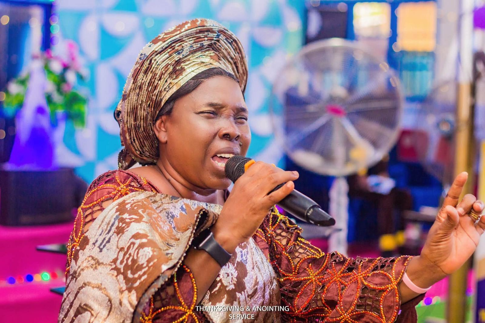
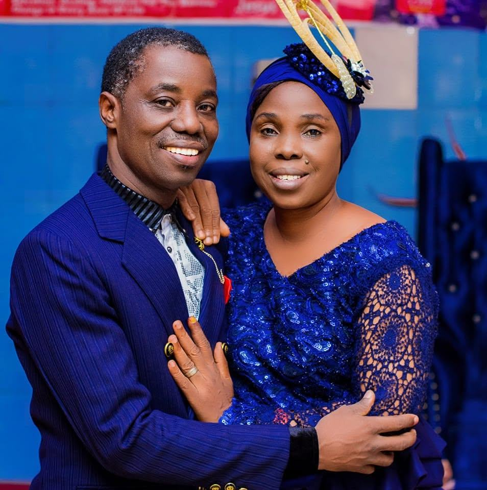

About us
26 years of obedience.
A place of salvation, healing, deliverance and transformation.
Our story
Christ Beloved Evangelical Ministry began 26 years ago, when Prophet Johnson Adeagbo obeyed a direction from God to start the ministry.
He and his wife, Pastor (Mrs.) Victoria Adeagbo, have built and served the ministry together from its beginning.

Our leadership
Founder
Prophet Johnson Adeagbo
Founded Christ Beloved Evangelical Ministry in obedience to a direction from God.
General Overseer
Pastor (Mrs.) Victoria Adeagbo
Has served alongside Prophet Johnson Adeagbo since the ministry's founding.